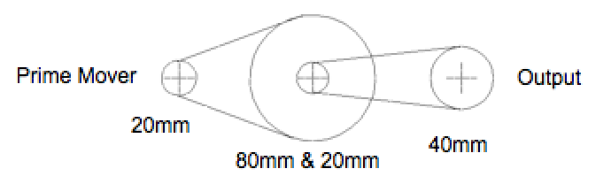
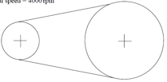
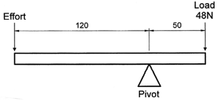

Mechanical Systems
Table of Contents
1 Introduction
- From children’s’ toys to the Martian lander, electronics need to be combined with electromechanical systems in order for the end result to be able to interact with the real world. There are four different basic types of motion, and the ability to transfer one form to the other in different ways gives the ability to produce new, useful machines.
Types of Motion
- Linear. Motion in a straight line, e.g. a paper guillotine, mono-stable solenoid or a train travelling along a straight track.
- Reciprocating. Motion back and forth in a straight line, e.g. a saw, bi-stable solenoid or sewing machine needle.
- Oscillating. Motion back and forth on a curved path, e.g. the pendulum on a clock, servo motor or a back-and-forth lawn sprinkler.
- Rotary. Motion traveling in a circular path, e.g. hands on a clock, a wheel or a DC motor.
Mechanical Components
- Classification and an awareness of everyday mechanical applications. Identify the different types of motion that can be seen in a bicycle, steam train, car and other everyday systems.
The BBC have an excellent resource looking at different mechanisms and linkages, which can be found over at: http://www.bbc.co.uk/schools/gcsebitesize/design/systemscontrol/mechanismsrev1.shtml
Mechanical Processes
- A minimum of two mechanical systems to provide each of the following transmissions of motion: -
- a) Rotary to rotary (parallel shafts)
Either a gear train (with three gears if the output direction is to remain unchanged) or belt & pulley systems can be used here. By having a larger number of teeth on the first gear, the output speed can be increased. By using a larger diameter input pulley, the driven shaft can be made to move more quickly.
- b) Rotary to rotary (perpendicular shafts)
Beveled gears, a worm-gear meshed with a perpendicular gear or perpendicular pulleys driven by friction can be used. As with the previous example, increasing the size of the input gear/pulley will increase the driven gear’s speed.
c) Rotary to linear / linear to rotary. A driven wheel running along a flat track (as seen in a car). By increasing the size of the wheel, the movement will be amplified (as long as the RPM of the wheel are maintained)
d) Rotary to reciprocating A cam and follower is the simplest way to achieve this conversion – by customizing the cam shape (there are numerous cam shapes, all with their own names), the displacement distance and speed can be modified.
A rack and pinion gearing system provides the means to move back and forward, driven from either the rack or pinion gear. By increasing the number of teeth on the pinion gear, the speed at which the rack moves also increases.
e) Reciprocating to rotary A crank, link and slider (as seen on traditional steam trains). By increasing the distance from the link to the centre of the crank, the displacement of each stroke can be increased.
f) Rotary to oscillatory / Oscillatory to rotary The treadle linkage (seen in car windscreen wipers and traditional foot-powered sewing machines) or a peg-and-slot mechanism both allow this type of movement conversion.
Amplifying Pulley velocity and Torque
- Example question (June 2008 P1, Q1f). Using any number of 20mm, 40mm, 60mm and 80mm diameter pulleys, sketch and label a pulley system that will amplify:
- Rotary velocity by a factor of 12. Show your calculations (6 marks)
- Torque by a factor of 8. Show your calculations (6 marks)
- To increase the speed of the output pulley by 12, we need to produce a 1:12 ratio over the space of whatever pulley combination we will end up using. When I looked at this question, the first thing I did was to see what the biggest ratio I could get was by using the smallest and largest pulley values – the 20mm and 80mm ones in this case. This would give a 20:80 -> 2:8 -> 1:4 ratio.
- This is only a third of what is needed, so another pulley pair will be needed to get the result required. Next, I looked for a pair of pulleys I could use which would provide a 3:1 ratio; I selected the 20mm and the 60mm, which gives a ratio of 20:60 -> 2:6 -> 1:3.
- 1:3 x 1:4 = 1:12, so my pulley system would look something like this…
- A torque factor of 8 means reducing the speed by 8x in order to increase the amount of turning force exerted by the output pulley. The same process is applied as before, but the prime mover will be on the other side of the diagram I’ll end up drawing (for instance, in the previous question, I could have amplified the torque by a factor of 12 if I’d attached a motor to the left-most pulley rather than the right). The first steps I took this time were again to start by looking at my biggest ratio (80mm and 20mm -> 4:1 – note that as I’m going for speed reduction, I’ve written the ratio the other way round). I then looked for another pair of pulleys that would give me a 2:1 ratio to achieve the 8:1 I need. Both 40mm/20mm or 80mm/40mm would do this – I chose 40mm/20mm to keep the size of the pulleys small. 40:20 -> 4:2 -> 2:1.
- 4:1 x 2:1 = 8:1

Tribology (Friction)
- Friction is the heat generated by two surfaces rubbing against each other. This can be either desirable or undesirable, and you should know examples of each.
- Braking systems in vehicles and machinery use friction to convert kinetic energy into heat in order to slow/stop. Some common configurations are shown here:
- Bicycle brake. In this system, a steel cable runs from the handlebars to the top of the brake assembly. When the brake is pulled, the two brake arms are pulled together. This in turn brings the brake blocks together, causing them to run against the steel rim of the bicycle wheel. The harder the brake cable is pulled, the greater the friction generated and the faster the wheel decelerates. When released, the pivots are spring-loaded, causing the brake blocks to return to their starting position ready to be used again.
- Disk brakes are seen in cars. The brake pedal in the cabin is connected to a pipe filled with brake fluid. When pressed, this causes the piston to move out, which in turn pushes the brake pads against both sides the disk (which is attached to a wheel), pinching it. Again, the harder the pedal is pushed, the greater the force exerted on the disk, causing the wheel to slow more quickly.
- Drum brakes are a more traditional (but still popular) brake design. They work by having a pair of brake shoes (made from a ceramic compound) that when the pedal is pressed, are pushed against the inside of the brake drum by the hydraulically operated master cylinder. When the pedal is released, the return spring pulls the shoes from the drum, ready for the next time they are needed. Drum brakes are the opposite of disks, as they push out against a surface, whereas disks pinch together around a surface.
2 Recap
Past Paper Questions
- June 2009 SCT1, Q3. (a) Using an annotated sketch describe a sensing system for producing a clean pulse that goes positive for each complete revolution of a rotating shaft. (8 marks)
- (b) Using a detailed systems diagram or circuit diagram describe how the pulses in part (a) can be used to increment a 3-digit display. (10 marks)
- (c) Figure 2 shows a belt and pulley system. The input pulley has a diameter of 50 mm and is rotating at 4000 rpm. The output pulley has a diameter of 120 mm.

- Input Pulley
- Diameter = 50 mm
- Rotational speed = 4000 rpm
- Output Pulley
- Diameter = 120 mm
- Calculate the rotational speed of the output pulley. (4 marks)
- (d) A motor is to run at a constant speed. Using annotated sketches describe a method by which an output shaft could be rotated at three different speeds. (6 marks)
- Specimen Paper, Q4. Using annotated sketches, discuss one mechanical method of converting rotary motion to reciprocating motion. (4x 1 mark)
- Specimen Paper, Q6. (a) Using annotated sketches, describe in detail two methods of transmitting rotary motion between two perpendicular shafts. (2 × 5 marks)
- (b) For one of the systems you described in part (i) discuss how the rotary speed of the output shaft can be decreased by a factor of 20 from that of the input shaft. (4 marks)
- (c) Using annotated sketches describe a mechanical system that will prevent an output shaft from turning when the input shaft is not powered. (4 marks)
- (d) Rotating shafts are often supported by bearings. Name two suitable materials for the manufacture of bearings. (2×1 mark)
- 2009, Q5. With the aid of a sketch, describe a method of converting rotary motion into reciprocating motion. (4 marks)
- 2009, Q6. With the aid of a sketch, describe a method of converting rotary motion into oscillating motion. (4 marks)
- 2009, Q8. (a) Describe two situations where frictional forces are undesirable in mechanical systems and explain how they may be reduced. (6 marks)
- (b) Using annotated sketches, describe the operation of two types of braking system used on mechanisms or machinery of your choice.
- (c) A lever is shown in the diagram below.

- Given that: Force A × Distance A = Force B × Distance B
- Calculate the effort required to balance the load. (4 marks)
- 2010, Q3. With the aid of an annotated sketch, show a system with an electrical input and an output of oscillating motion. (4 marks)
- 2011, Q2(b). Explain the following term, “oscillatory motion” (2 marks)
- 2011, Q6. (a) With the aid of annotated sketches describe two different methods of transferring and amplifying rotary motion between two parallel shafts. (14 marks)
- (b) With the aid of an annotated sketch, describe in detail how to convert reciprocating motion to clockwise rotary motion. (6 marks)
- 2012, Q7(b). With the aid of annotated sketches, show two systems for producing 200 mm of linear movement when triggered by an electrical pulse. You should clearly show how the amount of linear movement is limited to 200 mm. (12 marks)